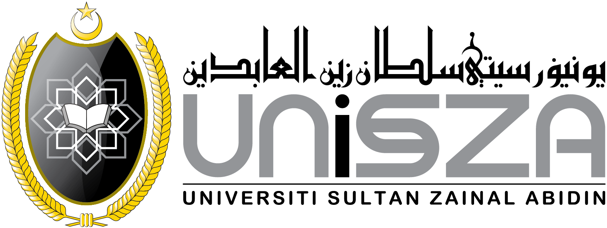

2023 — 2027
Bachelor of Computer Science (Computer Network Security) with Honours
Universiti Sultan Zainal Abidin (UniSZA), Faculty of Informatics and Computing
Current CGPA: 3.73
Coursework spanning network security, digital forensics, artificial intelligence, and secure systems design. Final Year Project: a hybrid Malay-language vishing detection system combining audio and text-based machine learning models.

Graduated 2023
Diploma in Information Technology
Universiti Tun Hussein Onn Malaysia (UTHM), Pagoh Campus
CGPA: 3.68
Programme covering application and web development, databases, computer networks, and cybersecurity fundamentals, preparing graduates for further study at degree level.